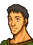

Chapter 7The Shield of Thracia第７章 トラキアの盾
Scenes (18)
- Narration
- Opening 1 (Leif's army flees)
- Opening 2 (The Munster army gives chase)
- Opening 3 (Shiva's scheme)
- Turn 2 (Welcome back, Hannibal)
- Turn 2
- When someone in Leif's army escapes while any Munster unit remains
- Enemy phase after Hannibal sorties
- Talk: Leif → Finn
- Talk: Nanna → Finn
- Talk: Safy → Shiva
- House (topmost)
- House (top)
- House (bottom)
- After Leif escapes
- Eisenau: battle quote
- Eisenau: defeat quote
- Eisenau: release quote
Narration
・・・無念の思いをむねに抱いたまま...With bitter regret still held in their hearts,
リーフたちはマンスターを脱出したLeif and his companions escaped Munster.
マギ団のメンバーたちの多くも
再起を期してこれに同行するMany members of the Magi Squad also accompany them, hoping for a comeback.
しかし、危機が去ったわけではないBut the danger had not passed.
多くの賞金稼ぎたちが
高い値がつくリーフの首をねらいMany bounty hunters were after Leif's head and the high price on it,
背後には、マンスター軍の追手が
迫りつつあったand behind them, Munster's pursuing troops were closing in.
Opening 1 Leif's army flees

王子
このままではマンスター軍に
追いつかれますPrince, at this rate the Munster army will catch up with us.

どうすればいい？What should we do?
方法は二つあります
西のトラキア山中に逃げ込み
騎士団の追撃をかわすかThere are two ways. Flee into the Thracian mountains to the west and shake off the knights' pursuit,
それとも、このまま南下して
ミーズ城に逃げ込むか・・・or continue south as we are and take refuge in Meath Castle...
いずれにしても
トラキアに保護を求めることは
必要でしょうなIn either case, it will be necessary to seek Thracia's protection.
トラキアに保護を？Seek Thracia's protection?
ばかな
トラキアは祖国を滅ぼし
父や母を奪った憎い相手だAbsurd. Thracia is the hated enemy that destroyed my homeland and took my father and mother.
トラキアの保護など
受けるつもりはない！！I have no intention of accepting Thracia's protection!!
王子はご自分の感情だけで
兵士たちを
危険な目にあわせるおつもりか？Do you intend to put your soldiers in danger over your own feelings alone, Prince?
かんちがいされては困ります
われわれは王子のあだ討ちを助けるために
戦っているのではないDo not misunderstand. We are not fighting to help you take your revenge.
帝国の圧政から
北トラキアを解放するために
立ち上がったのですぞWe rose up to liberate northern Thracia from the Empire's tyranny.
それは、そうだが・・・
しかしトラキアは信用できるのか？
彼らは帝国の同盟者だThat's true, but... can Thracia be trusted? They are the Empire's allies.
他国が国境をおかすとなれば
トラキア軍とて
だまってはいないでしょうIf another country violates its border, even the Thracian army will not stay silent.
特に、ミーズ城のハンニバル将軍は
『トラキアの盾』と
うたわれるほどの武人In particular, General Hannibal of Meath Castle is a warrior so renowned he is called the "Shield of Thracia."
マンスターのレイドリックから
逃れてきたといえば
必ずや助けてくれるでしょうIf we say we have fled from Raydrik of Munster, he will surely help us.
わかった
ではとにかくミーズ城へ逃げ込もう
ターラに行くのはそのあとだAll right. Then let's take refuge in Meath Castle for now. Going to Tahra comes after that.
ターラですと？・・・
ターラ市は子ども狩りに反抗して
帝国軍の包囲を受けていると聞きますTahra, you say? ...I hear the city of Tahra resisted the child hunts and is under siege by the imperial army.
この小さな戦力でターラに向かうことは
死を意味しますが
それでもよろしいのですか？Heading for Tahra with this small force means death. Is that acceptable to you?
ターラはぼくの第二の故郷だ
領主であったターラ公爵は
ぼくをかばって帝国に殺されたTahra is my second home. Its lord, the Duke of Tahra, was killed by the Empire for protecting me.
友達も大勢いる
アウグスト！
ぼくはターラを救いたいんだ！I have many friends there too. August! I want to save Tahra!
・・・わかりました
そのことはまた
後ほど相談いたしましょう...Understood. Let us discuss that matter again later.
今はとにかく
逃げることだけをお考えください！For now, please think only of escaping!
Opening 2 The Munster army gives chase
反乱軍どもは
歩兵が主体ゆえそう遠くへはいけぬThe rebels are mainly infantry, so they cannot get very far.
アイゼナウ
騎兵隊を率いて一気にせん滅せよEisenau, lead the cavalry and annihilate them in one stroke.
やつらがミーズ城に近づくまでに
全員始末するのだDispose of every one of them before they get near Meath Castle.
はい
・・・しかし
トラキアはわれらの同盟国Yes. ...However, Thracia is our ally.
本当に反乱軍は
ミーズ城に逃げこむのでしょうか？Will the rebels really flee into Meath Castle?
・・・帝国とトラキアは
同盟を結んでいるとはいえ
決して仲はよくない...The Empire and Thracia may be allied, but they are by no means on good terms.
むしろ
悪いといってもいいだろうIf anything, one might say they are on bad terms.
連中に少しでも
目先のきくやつがおればIf there is anyone among that lot with even a little foresight,
この状況を
利用しようと考えるにちがいないhe will surely think to make use of this situation.
なるほどI see.
ワシのとりこし苦労なら
それにこしたことはない
とにかく、急げIf I am worrying over nothing, so much the better. In any case, hurry.
ただ、ミーズ城には
ハンニバルの装甲軍団が控えておるHowever, Hannibal's armored corps is stationed at Meath Castle.
まちがっても
やつらと戦ってはならんぞ
わかったか！Whatever you do, you must not fight them. Understood!?
はっ！Yes, sir!
Opening 3 Shiva's scheme
Only if you did not defeat Shiva in Chapter 2x

さわがしいな
なにごとだ・・・It's noisy. What's going on...
マンスターで
ひとさわぎあったようだぜSeems there was a commotion in Munster.
なんでも
首謀者はリーフとかいう若造で
レンスター王家の生き残りらしいWord is the ringleader is some youngster called Leif, a survivor of the Leonster royal family.
そいつを殺すなり捕まえるなりすりゃ
賞金もたんまり・・・
ひさしぶりのおいしいエモノってわけだKill him or capture him, and there's a fat bounty... A tasty bit of prey for the first time in a while.
ふむ・・・Hmm...
Turn 2 Welcome back, Hannibal

おかえりなさいませ、ハンニバル将軍Welcome back, General Hannibal.
牢に捕えられているものがいるようだが
わしの留守の間に、なにかあったのか？It seems there are people held in the cells. Did something happen while I was away?
はっ
領内にふしんなものたちが
おりましたので捕えましたSir. There were suspicious persons in our territory, so we apprehended them.
おそらく
東の辺境あたりからやってきた
山賊どもではないかと・・・Most likely bandits who came from around the eastern frontier...
ふむ・・・
本人たちは何と言っておるのだ？Hmm... What do they themselves say?
『自分たちはただの村人だ』などと
バカなことを申しておりますがThey say foolish things like "we're just villagers,"
あのふてぶてしさからさっするに
かなりの
悪党どもにちがいありませんbut judging from their brazenness, they must be considerable villains.
If Finn is alive
ただ・・・
騎士らしきものがいたのですが
その男を取り逃がしてしまいましたHowever... there was one who appeared to be a knight, and we let that man get away.
現在、手分けして探させておりますWe currently have men split up searching for him.
うむ、わかった
あとでわしが話を聞こうMm, understood. I will hear what they have to say later.
それより
マンスター周辺がさわがしいようだなMore to the point, things seem noisy around Munster.
レイドリックめが
何かたくらんでおるのかもしれん
注意をおこたるな！That Raydrik may be plotting something. Do not relax your vigilance!
はっ、承知いたしました！Sir, understood!
Turn 2
If Finn is alive

リーフ様はご無事だろうか・・・
はやくお迎えに向かわねば・・・I wonder if Lord Leif is safe... I must hurry and go to him...
If Safy is alive
私はもう行かねばなりません
シスターは街へ戻ってくださいI must be going now. Sister, please go back to the town.

フィン様
やはり私は
足手まといでしょうか？Sir Finn, am I a burden after all?
いや、そんなことはない
あなたの協力は心強いが
私にはシスターを守る自信がないのだNo, not at all. Your help is reassuring, but I am not confident I can protect you, Sister.
私はターラを出るとき
軍神ヘイムに誓いましたWhen I left Tahra, I swore to Heim, the god of war,
ターラを守る勇者のためなら
神にめされることもいとわぬとthat for the sake of the hero who will protect Tahra, I would not shrink even from being called to God.
フィン様、私を気づかうことは無用です
もしもお役に立てるのなら
どうぞお連れくださいませSir Finn, there is no need to concern yourself over me. If I can be of use, please take me with you.
わかりました
シスターが
そこまで言われるなら・・Very well. If you go so far as to say that, Sister...
では行きましょう
日がくれるまでに
王子を探さねばなりませんThen let us go. We must find the prince before the sun sets.
If Finn is dead or captured and Safy is alive
リーフ様はご無事かしら・・・I wonder if Lord Leif is safe...
When someone in Leif's army escapes while any Munster unit remains
なに
マンスター軍がこの城に迫っていると？What, the Munster army is closing in on this castle?
うむっ
レイドリックめ
わしを侮るか！Hmph, Raydrik, do you take me lightly!?
装甲軍団！
ただちに出撃せよ！Armored corps! Sortie at once!
わが軍団の恐ろしさを
やつらに
思い知らせてくれようぞ！！Let us teach them just how fearsome our corps is!!
Enemy phase after Hannibal sorties
なに
ハンニバルが出てきただと？
まずいな・・・What, Hannibal has come out? This is bad...
やむをえん
ここはひけ
全軍マンスターに退却せよ！It can't be helped. Pull back. All troops, retreat to Munster!
Talk: Leif → Finn
リーフ様！！
ご無事でしたか！Lord Leif!! You were safe!
フィン
心配をかけたなFinn. I made you worry.
いや、リーフ様のこと
きっと無事だろうとは信じておりましたが
まさかこのように早くお会いできるとは・・・No, knowing you, Lord Leif, I believed you would surely be safe, but to think I would see you again so soon...
これもみんな
マギ団のおかげだThis is all thanks to the Magi Squad.
マギ団？・・・
彼らはマギ団というのですか？The Magi Squad? ...They are called the Magi Squad?
騎士や傭兵もいるようですが
いったい何者なのです？There seem to be knights and mercenaries among them. Who on earth are they?
彼らはマンスターの反乱軍だ
街が解放される日まで
ぼくに協力すると言ってくれたThey are Munster's rebel army. They said they would help me until the day the city is liberated.
それはなによりです
ところでリーフ様
エーヴェルの姿が見えぬようですが？That is good news indeed. By the way, Lord Leif, I don't see Eyvel...
エーヴェルはマンスターにいる・・・
ロプトの司祭によって
石の姿に変えられてしまったEyvel is in Munster... She was turned to stone by a priest of Loptr.
今はどうすることもできない・・・There's nothing we can do right now...
！・・・そんなことが・・・
リーフ様・・・
申し訳ありません・・・!... How could such a thing... Lord Leif... forgive me...
フィンがあやまることはない
それにエーヴェルは・・・
ぼくがきっと取り戻す！There's nothing for you to apologize for, Finn. Besides, Eyvel... I will get her back, I swear!
いいなフィン
エーヴェルはぼくたちの手で
取り戻すんだ！Listen, Finn. We will get Eyvel back with our own hands!
だからフィンは死ぬな！
再びマンスターに戻る日まで
ぜったいに死んじゃだめだ！So don't die, Finn! Until the day we return to Munster, you absolutely must not die!
はっ、この勇者の槍にちかって
もう二度とリーフ様のお側を
逃れることはいたしません！！Yes, sir. I swear on this Brave Lance, I will never again leave your side, Lord Leif!!
うん・・・
ところでフィン
ほかのみんなはどうしたんだ？Mm... By the way, Finn, what happened to everyone else?
ミーズ城に捕われていますThey are being held in Meath Castle.
救出も考えましたが
とにかく王子にお会いしてからと思い
そのままにしてありますI considered a rescue, but I thought I should see you first, Prince, and left things as they were.
そうか
いずれにしても
ミーズには行けということか・・・I see. So either way, we're meant to go to Meath...
フィン
ミーズでみんなと合流し
そのあとはターラに行こう！Finn, let's join up with everyone in Meath, and after that go to Tahra!
あの街は
フィンにとってもなつかしいはずだThat city must be nostalgic for you too, Finn.
はっ、リーフ様！Yes, Lord Leif!
Talk: Nanna → Finn

お父様！？Father!?
ナンナ・・・
無事でよかった
大丈夫か？ どこもけがはないか？Nanna... I'm glad you're safe. Are you all right? You're not hurt anywhere?
はい
エーヴェルが
守ってくれましたから・・・Yes. Eyvel protected me...
そうか・・・
よかったI see... Good.
おまえにもしものことがあれば
私はあの方に
なんと言ってわびればいいのか・・・If something were to happen to you, what could I ever say to apologize to her...
お父様・・・Father...
うん？
なんだ
どうかしたか？Hm? What is it? Is something wrong?
いいえ・・・
ごめんなさい
何でもありません・・・No... I'm sorry. It's nothing...
フッ・・・
おかしなやつだ
とにかくおまえは後方に下がれHeh... What a strange girl. Anyway, fall back to the rear.
杖での支援は必要だが
戦うのはまだはやいWe need your support with staves, but it is still too early for you to fight.
はい、お父様・・・Yes, Father...
Talk: Safy → Shiva
あっ、あなたは・・・Oh, you're...
シスターか・・・久しぶりだなThe sister... It's been a while.
どうしてあなたがこんなことを？
あなたは、悪い方ではないのに・・・Why are you doing something like this? You're not a bad person...
これは俺の仕事だ
シスターには関係ない
さあ、そこをどいてもらおうThis is my job. It has nothing to do with you, Sister. Now, step aside.
いいえ
どきませんNo. I won't move.
・・・シスターは
あの小僧のために
命をすてると言うのか？...Are you saying you'd throw away your life for that boy, Sister?
はい
おのぞみならば！Yes. If you wish it!
・・・・・・......
リーフ王子は
トラキアにとって
かけがえのない方ですPrince Leif is irreplaceable to Thracia.
私の命に代えられるなら
よろこんでさし上げますIf my life can be exchanged for his, I'll gladly give it.
フン・・・
バカなことを言う女だ・・・
まあいい・・・好きにしろHmph... What a foolish thing for a woman to say... Fine... do as you like.
えっ！？
では王子を
助けてくださるのですか？What!? Then you'll help the prince?
ああ・・・
なんだかばからしくなってきたYeah... It's started to seem kind of stupid.
だがシスター
ひとつ言っておくぞBut Sister, let me tell you one thing.
俺の前では軽々しく死を口にするな
俺は死に急ぐやつがだいきらいだ！Don't speak lightly of death in front of me. I can't stand people who rush to their deaths!
ごめんなさい・・・
気をつけますI'm sorry... I'll be careful.
シスター
一つ聞いてもいいか？
おまえの望みはなんだSister, may I ask you one thing? What is your wish?
どうすれば
おまえは明るく笑えるのだ？What would it take for you to laugh brightly?
私の望みは
人々が皆、幸せになることです
皆が笑えば、私も笑えますMy wish is for all people to be happy. If everyone smiles, I can smile too.
なるほど・・・
聞いた俺がばかだったなI see... I was a fool to ask.
まあいい
俺はサバンのシヴァだ
おまえの名は？Well, fine. I'm Shiva of Savan. Your name?
サフィ
ターラのサフィですSafy. Safy of Tahra.
House topmost

あんたら
ターラへ行くんだって？
なら、この毒けしを持っていきなI hear you're going to Tahra? Then take this antidote with you.
毒にやられたときは
このクスリを傷口にぬれば
たちどころに毒は消えちまうWhen you've been poisoned, rub this medicine on the wound and the poison's gone in an instant.
西に勢力をはっている盗賊の中には
毒をしこんだ武器の使い手がいるって
ウワサだRumor has it that among the thieves who hold sway in the west, there are some who use poisoned weapons.
毒をなめたらひどい目にあう
だから、これを持っていきなTake poison lightly and you'll be in for it. So take this along.
House top
ひ、ひえ～
許してくだせえ
ほんの出来心だったんで・・・Eek! Forgive me! It was just a moment of weakness...
え？
ミーズ城の守備隊じゃない？
なんでえ、おどかしやがってHuh? You're not the Meath Castle garrison? What, don't scare me like that.
今のことは忘れてくれよ、な
その代わりに
これ、やるからさForget what just happened, okay? In exchange, I'll give you this.
House bottom
.png)
あんたたち
よかったら南にある
闘技場に行ってみたらどうだい？If you like, why not try going to the arena to the south?
そこで戦って勝てば金も入るし
ちょっとした腕試しにもなるよIf you fight and win there you'll get money, and it's a bit of a test of your skill, too.
あ、でも
そこで負けちまうってことは
命を落とすってことだからさOh, but losing there means losing your life,
調子にのって
あんまりムチャをしちゃいけないよ
なにごとも『ほどほど』が一番！so don't get carried away and do anything too reckless. "In moderation" is best in all things!
行くのなら
いざというときのためにこれをあげるよ
なにかの役に立つと思うよIf you're going, I'll give you this for emergencies. I think it'll be of some use.
After Leif escapes
マンスターから
逃げてこられたそうだが
どうされたのかな？I hear you fled from Munster. What happened?
はい
私たちは
東海岸に住んでいたのですがYes. We lived on the east coast,
子供狩りに反抗した罪で
捕われましたand were arrested for the crime of resisting the child hunts.
でも
街のレジスタンスに救われ
一緒に逃げ出してきましたBut we were saved by the town's resistance and escaped together with them.
ふむ・・・まだお若いが
なかなかよい顔をされておられる
名前は？Hmm... You are still young, but you have quite a fine face. Your name?
ルー・ファリスです
ハンニバル将軍Lugh Faris, General Hannibal.
うーむ、にている・・・Hmm, a resemblance...
えっ？・・・何がです？Huh? ...To what?
いや、何でもない
それより
これからどうなされるおつもりか？No, it is nothing. More importantly, what do you intend to do now?
ターラに行くつもりです
あの街には友人がいますからI intend to go to Tahra. I have friends in that city.
中央山脈をこえてゆかれるおつもりか？Do you intend to cross the central mountains?
はい
私たちは反逆者です
帝国の領内は歩けませんYes. We are rebels. We cannot walk through imperial territory.
そうか・・・
あのあたりは山賊が多い
気をつけて行かれよI see... There are many bandits in that area. Go carefully.
Only if any of Osian, Halvan or Ronan survived through Chapter 3
はい
では
仲間たちは解放していただけますか？Yes. Then will you release my companions?
ああ、もちろんだ
誰か
あのものたちをここへ！Yes, of course. Someone, bring them here!

はっ！・・・Sir!...
Only if Halvan survived through Chapter 3

リーフ王子！ 来てくれたのか
すまない
何も役にたてなかったな・・・Prince Leif! You came. Sorry, we were no help at all...
Only if Osian survived through Chapter 3
くそっ、トラキアのやつら！
今度会ったら
ただじゃすませねぇぜ！！Damn those Thracians! Next time I see them, I won't let them off easy!!
Only if Ronan survived through Chapter 3

リーフ王子
申し訳ありません
私たちに力がないばかりに・・・Prince Leif, forgive us. All because we lacked the strength...
おわびといってはなんだがIt is not much of an apology, but...
(Carrion appears)
カリオン
この方たちをご案内しろCarrion, guide these people.
中央山脈は難所が多い
それに紫竜山あたりでは
大がかりな山賊狩りが行われているThe central mountains have many hard passes. And around Purple Dragon Mountain, a large-scale bandit hunt is under way.
またまちがわれては
今度こそ命を失うかもしれぬIf you were mistaken for them again, this time you might lose your lives.

はっ、かしこまりましたYes, sir. As you command.
将軍、そこまで
していただかなくとも大丈夫です
私たちは・・・General, you needn't go that far. We'll be...
どうかお連れください
私はご一緒したいのです！Please take me with you. I want to go with you!
・・・そこまでおっしゃるなら
紫竜山あたりまでお願いします...If you insist, then please, as far as Purple Dragon Mountain.
はい！Yes!
Only if you delivered Coirpre to the house in Chapter 3
こんにちは！Hello!
あれ、きみはたしかケルベスで・・・
どうしてここに？Oh, you're the one from Kelves... Why are you here?
ハンニバルはぼくの父なんです
それで、これ・・・Hannibal is my father. And so, this...
ワープの杖っていう
とっても強力な杖なんです
お礼に差し上げますIt's a very powerful staff called the Warp staff. I'm giving it to you as thanks.
ありがとう
でも、いいのかな・・・Thank you. But is it really all right...
ルーどの
日が暮れてしまう
そろそろ出発されたほうがよいなSir Lugh, the sun will set. You had best be setting out soon.
はい
いろいろお世話になりました
ハンニバル将軍Yes. Thank you for everything, General Hannibal.
このご恩は決してわすれません！I will never forget this kindness!
Eisenau: battle quote
こわっぱども！
わしが倒せると
おもうのか！！You whelps! Do you think you can defeat me!!
Eisenau: defeat quote
ばかな・・・
なんということだ・・・Absurd... How can this be...
Eisenau: release quote
(Cannot be captured)